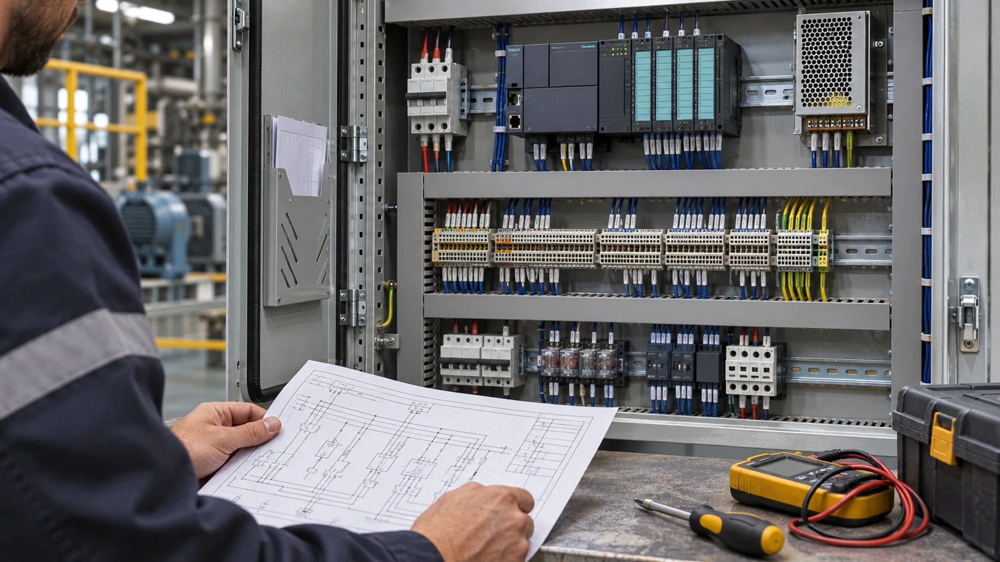

← Voltar às experiências
MANUTENÇÃO E ATUAÇÃO EM CAMPO
Manutenção elétrica e eletrônica industrial
Leitura de projetos elétricos, instalação em campo e diagnóstico de problemas em painéis e sistemas industriais.
Painéis industriais · Diagnóstico · Projetos elétricos

O contexto
Identificar problemas em instalações e painéis industriais, relacionando o comportamento observado em campo com a documentação elétrica do equipamento.
A aplicação
Atuação em serviços de manutenção elétrica e eletrônica de painéis industriais, instalação em campo e identificação de falhas, com apoio da leitura e interpretação de projetos elétricos.
Minha experiência
Já realizei diversos serviços nessa área, trabalhando com leitura de documentação, instalação e diagnóstico em campo. Essa experiência complementa meu trabalho com programação e integração de automação.